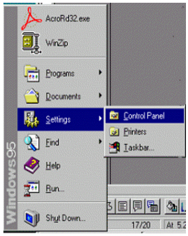
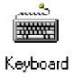
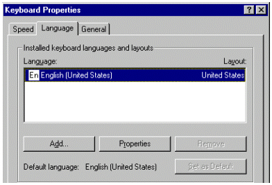
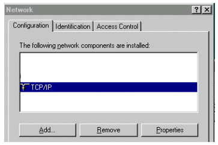
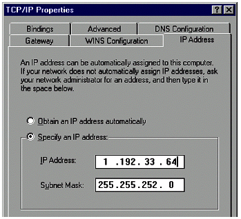
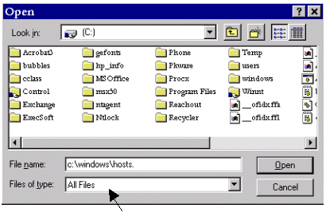
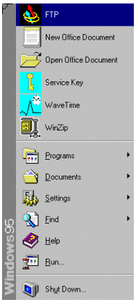
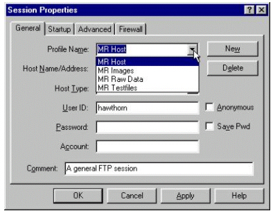
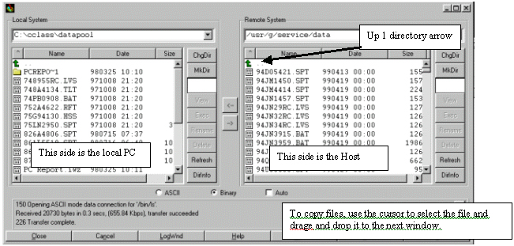

Operating Documentation
Direction 5133315-3, Rev# 14
Signa EXCITE HD 1.5T Service Methods
Module Version 1.0, Version Date 5/15/07
Operating Documentation |
| Required Persons | Preliminary Reqs | Procedure | Finalization |
|---|---|---|---|
| 1 |
| Item | Qty | Effectivity | Part# | Manufacturer | |
|---|---|---|---|---|---|
| GE PC Boot Floppy and Software Image CD ROM. | 1 | - | 2192746-4 | - | |
No general safety information.
It will first be necessary to determine what vintage PC is being used by the system to be loaded. Open the Operator work space cabinet. The PC is on the left side of cabinet.LX1PC.
When starting the software load process this PC would represent, LX1PC 
When Starting the software load process, This PC would represent, LX2PC 
When Starting the software load process, This PC would represent, LXPC3. 
When Starting the software load process, This PC would represent, LXPC4.
This PC starting in second half 2000 does not Use a CD/floppy set to reload
software. But instead Only uses 2284297-2 boot floppy. The software for Reloading
is mirrored on the hard drive. Refer to
Loading Software , Step 2. 
Software load on LXPC 1,2 and 3
Switch the system keyboard to the PC subsystem. See Section 4.1 of Loading Operator workspace PC computerfor information on switching the keyboard.
Put the 2192746-4 Boot Floppy into the floppy drive and the CD into the CD ROM drive.
Reboot the PC by ether pushing the [Reset] button on the front of the PC or cycling power to the PC.
The system will boot to the following menu.
Table 1: Boot Menu
| A - Load Base Software {Load form Cold} X - Exit |
Push A on the Keyboard to continue or X if you wish to abort the software load
A warning message will appear that all previously loaded software on the PC will be lost. Select Y to continue the software load.
The next thing seen will be Microsoft License agreement. When the first half of the agreement displays on the screen, press any key… to view the second half. Then press the Y key to accept the agreement and continue to load the software. Pressing N will terminate the software load.
The following menu will apear:
Table 2: Software Choice Menu
| Chose Base Software You Wish To Install A LX1PC B LX2PC C LX3PC X EXIT |
Chose the PC as per Determine the PC type to be loaded. of this document. Or chose X to exit. This is the last opportunity to abort loading software.
The software load itself will begin. It will take approximately 2 minutes to load. When finished, remove the Boot Floppy and CD ROM and reset or power cycle the PC.
| NOTE: | If the PC boots to Windows 95 and reports that drivers need to be loaded or that drivers are loading, then the wrong PC was chosen for the load. Restart the load process and choose the right PC. |
Loading the LX4PC
Switch the system keyboard to the PC subsystem. See Section 4.1 of Loading Operator workspace PC computer for information on switching the keyboard.
Put the 2284297-2 Boot Floppy into the floppy drive.
Reboot the PC by ether pushing the [Reset] button on the front of the PC or cycling power to the PC.
The system will boot to the following message:
GE Medical Systems
Signa PC Subsystem Software Load Floppy
2284297-2 - 9/29/00
WARNING! THIS PROCEDURE WILL RESTORE THE PC HARD DRIVE
DATA TO ITS ORIGINAL CONDITION AS SHIPPED.
This disk is ONLY intended for PC 2284297.
- ANY OTHER USER LOADED SOFTWARE WILL BE LOST
- NETWORK CONFIGURATION WILL NEED TO BE RESET TO
SITE CONFIGURATION
Do You Wish To Continue?Select Y to continue.
Press any key to continue.
Select Y to agree to the license agreement.
The primary partition will be reloaded as it was configured when shipped, this should take about 5 minutes. If you are unable to reload, verify that the boot floppy is good by attempting to read it on another PC. If it is apparent that the hard drive is corrupted or defective, then the PC must be replaced.
The following configurations are necessary to make sure that the PC subsystem will be able to communicate with the Signa host computer.
Accessing Configuration Controls
| NOTE: | The Task bar is set to Auto hide, it can be visible by dragging (no clicking) the mouse pointer down to the bottom of the screen which will cause the system to show the Task Bar again. Moving the cursor away from the bottom of the screen will cause the Task bar to hide again. |
Click on [Start] | [Settings] | [Control Panel]. The Control Panel displays icons used to access control setting.
Illustration 1: Start Menu

Keyboard Setting
| NOTE: | The default configuration for the keyboard is English. There is no need to complete this section unless you are using a keyboard other than English. |
Find the Icon [Keyboard], then double
click it with the left mouse button. 
Choose the [Language] tab. To change the default language, select the [Add] button. A pop-up box will give a selection of countries to choose from. Select desired country for the keyboard being used on the system you are loading. Then select the [OK] button, then the [Apply] button at the bottom of the Properties box. Windows will need to reboot for changes to take affect.
Illustration 2: Keyboard Properties Menu

Network Configuration
Locate and open the [Network] icon by double clicking
with the left mouse button. 
At the main Network box, select the [TCP/IP - 3Com…….] entry and select the [Properties] button.
Illustration 3: Network Window

Select the [IP Address] tab. Make sure the “Specify an IP Address” is selected. Enter the IP address that will be used for the system PC. For Subnet Mask enter; 255.255.255.0 (or site Netmask) . Select the [OK] button at the bottom of the “Properties” page, then the [OK] button at the bottom of the “Network” page. Close Control Panel by clicking on the [X] in the upper right corner of the window. Select [YES] to reboot the PC for changes to take effect.
| NOTE: | Use the IP Address and Subnet Mask provided by your network administrator or recorded in . |
Illustration 4: TCP/IP Properties Window

LCD Screen Resolution
| NOTE: | Only do this procedure if the LCD PC display is a Panoview 600 model. |
Two types of LCD PC display devices are currently being used. The older model is Nview and the latest model is Panoview 600. For the Nview, the default resolution of 640 by 480 is the highest possible setting. So, no resolution adjustments are made to the Nview LCD. If the system being loaded contains a Panoview 600, do the following to adjust the screen resolution:
Open the system Control Panel by clicking on the [Start] button, then [Settings], then [Control Panel].
Find the [Display] Icon and double click
it. 
On the next screen, select the [Settings] tab. The screen will look like one of the following two screen shots. Set the following settings:
If your screen looks like the Illustration 5 do the following:
Select the [OK] button at the bottom of the screen. When asked to configure the monitor, select [YES]. Select [Standard Monitor Types] on the left side of the screen and [Super VGA 800 x 600] on the right side of the screen. Click on [OK] twice. The computer tests the configuration and asks “Would you like to Restart the computer with the new settings?” Click on [OK]; the computer will restart. When Windows 95 restarts, you can close the control panel by clicking on the [X] in the upper right corner of the window.
If your screen looks like the Illustration 6 do the following:
Click on the [Change Display Type] button. Click on the [Change] button by Monitor Type. Select [Standard Monitor Types] on the left side of the screen and [Super VGA 800 x 600] on the right side of the screen. Click on [OK]. Click on [Close] to the Change Display Type window. Now change the Display Area to 800 x 600. Click on [OK] to the Display Properties window. Click on [OK]. The computer will test the configuration and ask the user “Do you want to keep these settings?” Click on [YES] and close control panel by clicking on the [X] in the upper right corner of the window.
Illustration 5: STB Video driver (new Panoview 600 monitor)

Illustration 6: ATI Video driver (New Panoview 600 Monitor)

Setting PC Local Host File
To configure the local network host file select the Task Bar [Start] button. Move up and select [Programs] then [Accessories] then over to [NotePad]. The NotePad text editor will start. In NotePad, select [File] then [Open].
Illustration 7: Open Window

Change the “File of type” box to “All Files(*.*)” .
In the “File Name” box type:
c:\windows\hosts.
| NOTE: | Note: The period after c:\windows\hosts MUST be included in the “File Name” box. |
The host file will now open. Add the following new entries at the bottom of the host file.
x.x.x.xOPBOX_PC (X’s should be replaced with the IP Address of this PC)
x.x.x.xlx-mr (X’s should be replaced with the IP Address of the SGI Host)
In NotePad, select [File] then [Save] and [File] then [Exit] Note Pad.
Setting Language for WaveTime and Service Key Tools
| NOTE: | The Wavetime tool which is used to keep track of scan times as well as patient gating information and the Service Key dialog box, are multi-language application. The Service Key application also allows messages and information to be set. The default base language for the PC tools is English. It will not be necessary to complete this task unless some other language is desired. If English is the desired language, then proceed to Step 6.b. |
Setting Wavetime base language
Go to Windows 95 task bar and select the [Start] button.
Select [Programs] then [GE Medical Systems], then [Set Language] option. The [Main Menu] program is displayed
Table 3: Main Menu
| Main Menu |
| (L)anguage for Wavetime and Skey |
| (E)dit Skey Text Message |
| (Q)uit program |
Type: L<Enter> to set the base language for the applications. The “Language Menu” is displayed:
Table 4: Language Menu
| Language Menu |
| (E)nglish |
| (F)rench |
| (G)erman |
| (I)talian |
| S(P)anish |
| (S)wedish |
| (R)eturn to Main Menu |
Select the letter of the language desired for the system being configured. Example: e<Enter> (This would set English as the primary language.)
The program then prompts for verification of the selection. “You have selected (*language chosen*) language [Y/N]”
If correct type: y<Enter> to except the change or n<Enter> to return to the selection menu.
Setting Messages In Service Key Dialog Box
| NOTE: | The Service Key dialog box contains a message field that can be set to reflect the needs of the site. If no changes are desired, this section can be skipped. Do the following to set messages: |
If not already in the “Set Language” menu, go to Windows 95 task bar and select the [Start] button.
Select [Programs] then [GE Medical Systems], then [Set Language] option. The “Main Menu” is displayed in Table 3.
Type: E<Enter> to set the base language for the serivce key messages. The “Language Menu” is displayed in Table 4.
Select the letter of the language desired for the Service Key message box. Example: E<Enter> (This would set English as the primary language.)
The program then prompts for verification of the selection: “You have selected (*language chosen*) language [Y/N]”
If correct type: y<Enter> to except the change or n<Enter> to return to the selection menu.
Five lines of message are available at 30 characters for the Service Key Message box. All lines can be updated with a message or select lines can be updated or changed as desired. The message edit menu is presented as shown in Table 5.
To change a message line type the following on the input field: 1<Enter>
Type your message up to 30 characters including spaces and then the <Enter> key.
Repeat this process for all five lines or only the lines that need updating. When finished updating, type S<Enter> to save changes and return to the main menu. Or type R<Enter> to go to the main menu without making any changes.
At the main menu (shown in Table 3), type Q<Enter> to exit.
Close the DOS window by typing, exit<Enter> at the DOS prompt.
Table 5: Message Edit Menu
| Message edit Menu |
| (1) Edit Message Line 1 |
| (2) Edit Message Line 1 |
| (3) Edit Message Line 1 |
| (4) Edit Message Line 1 |
| (5) Edit Message Line 1 |
| (R) Return to Main Menu |
| (S) Save and Return to Main Menu |
The standard PC load comes configured with a FTP tool to make file transfers between the system PC and the host computer easier to do. The tool can be used to transfer images, raw data, test files or any other text or binary files to or from either computer.
To start the tool, select on the task bar, the [Start] button then scroll to ftp. See Illustration 8.
Illustration 8: STARTING THE FTP TOOL

The tool comes pre-configured for usual transfers made between the computers. See Illustration 9.
Illustration 9: INITIAL STARTUP OF THE FTP TOOL

Use of this tool as configured assumes the PC's host file has been updated with the host IP address. Refer to PC Configuration, Step 5 of this document for updating the host file if needed.
Several locations have been pre-loaded into the FTP tool. See Illustration 10.
Illustration 10: SESSION SELECTION

To transfer files from the host to the PC;
Select a session that would put you closest to the desired data.
Enter a User Name. The Default would be sdc. This is case sensitive, user lower case.
Enter the systems password. Signa default for sdc would be adw2.0<Enter>.
Illustration 11: THE FTP USER INTERFACE

For further discussion on the FTP tool itself and the how to's of using the tool, press the [Help] button at the bottom of the interface.
No finalization steps.